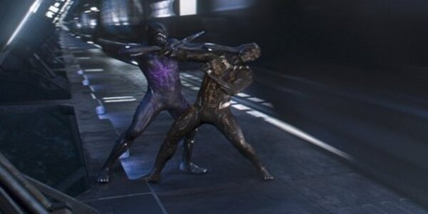

Escenas Relevantes
Segundos previos al comienzo del enfrentamiento entre Erik Killmonger y T’Challa en lo que parece la batalla por el trono de Wakanda. Una batalla que se ha mostrado en anteriores promos de la película.
Después de haber consumido la hierba en forma de corazón, la fuerza de T'Challa se ve tremendamente aumentada más allá del pico del potencial humano, pasando a los primeros niveles de la condición sobrehumana.

Killmonger argumentó que el mundo le quitó todo, todo lo que alguna vez amó y se asegurará de que T'Challa y él estén a mano, rastreando a cualquiera que piense en ser leal a T'Challa y asesinarlo, solo como le hizo a Zuri.